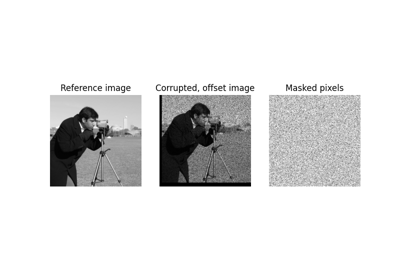
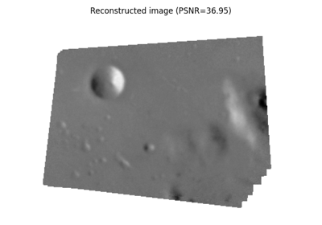

Source
SourceImage registration¶


Masked Normalized Cross-Correlation
Masked Normalized Cross-Correlation


Assemble images with simple image stitching
Assemble images with simple image stitching

Using Polar and Log-Polar Transformations for Registration
Using Polar and Log-Polar Transformations for Registration